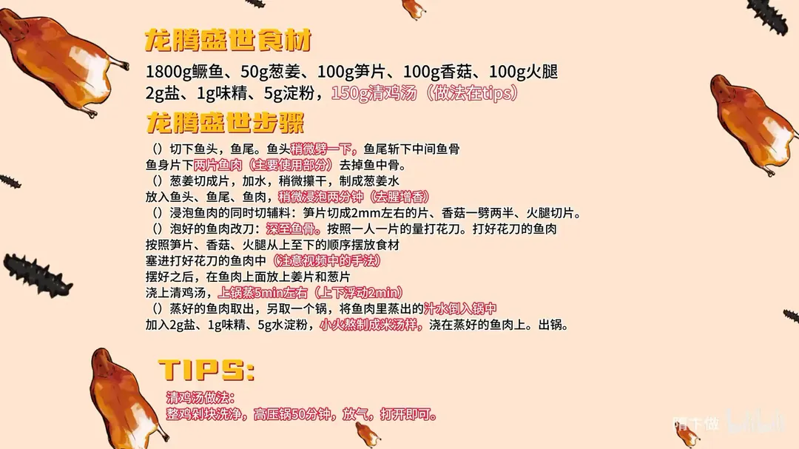

麒麟鱼
隋卞一做。1800g 鳜鱼片下两片鱼肉，深至鱼骨打花刀，把笋片、香菇、火腿按序塞进刀口，摆成麒麟鳞片状；浇 150g 清鸡汤蒸约 5 分钟，再用蒸出的汁水加盐、味精、水淀粉熬成米汤芡浇上。
原视频：https://www.bilibili.com/video/BV1vt421p7Fz
食材
鳜鱼、葱姜、笋片 等 9 样
| 类别 | 用料 | 用量 |
|---|---|---|
| 主料 | 鳜鱼 | 1800g |
| 配料 | 葱姜 | 50g |
| 配料 | 笋片 | 100g |
| 配料 | 香菇 | 100g |
| 配料 | 火腿 | 100g |
| 调料 | 盐 | 2g |
| 调料 | 味精 | 1g |
| 调料 | 淀粉 | 5g |
| 调料 | 清鸡汤 | 150g |
步骤
- 取鱼肉：切下鱼头、鱼尾，鱼头稍微剪一下，鱼尾斩下中间鱼骨；鱼身片下两片鱼肉（主要使用部分），去掉鱼中骨。
- 葱姜水泡鱼：葱姜切成片，加水后稍微攥干，制成葱姜水；放入鱼头、鱼尾、鱼肉，稍微浸泡两分钟，去腥增香。
- 切辅料：泡鱼肉的同时切辅料——笋片切成 2mm 左右的片，香菇一劈两半，火腿切片。
- 打花刀塞料：泡好的鱼肉改刀，深至鱼骨，按照一人一片的量打花刀；再按笋片、香菇、火腿从上至下的顺序，把食材塞进打好花刀的鱼肉中（注意视频中的手法）。
- 摆盘蒸制：摆好之后，在鱼肉上面放上姜片和葱片，浇上 150g 清鸡汤，上锅蒸 5 分钟左右（上汽后 2 分钟）。
- 熬芡浇汁：蒸好的鱼肉取出，另取一个锅，把鱼肉里蒸出的汁水倒入锅中，加 2g 盐、1g 味精、5g 水淀粉，小火熬制成米汤芡，浇在蒸好的鱼肉上，出锅。
小贴士
- 清鸡汤做法：整鸡剁块洗净，高压锅压 50 分钟，放气后打开即可。
讲解要点
难度：★★★★☆（取肉不难，难在花刀深至鱼骨而不断皮，塞完料还要立住麒麟造型）
为什么这么做
- 先剪掉背鳍上的尖：桂鱼背鳍上的硬棘带毒，扎到手会肿痛，下刀前先处理掉最稳妥。
- 鱼皮上的黑膜刮净：那层黑膜是腥味的大头，刮干净能带走很大一部分腥。
- 只用葱姜水泡 2 分钟、不用盐腌：鱼肉细嫩，盐腌会出水变紧，葱姜水短泡只去腥、不夺本味。
- 花刀深至鱼骨但不打穿：深到骨头、断皮就断，塞料后鱼片才能像鳞片一样翻开立住，蒸的时候也不散。
- 按笋片、香菇、火腿的顺序塞：三样质地和颜色都不同，固定顺序才码得出「麒麟鳞」的层次，每片鱼也都配齐三种鲜味。
- 盘底浇清鸡汤、蒸出的原汤回锅勾芡：鸡汤补鲜又不夺本味，蒸出来的汁本身就带鲜，回锅加盐勾米汤芡再浇回去，一点不浪费。
- 上汽后只蒸 5 分钟、看鱼眼凸出：鱼肉薄、配料也切得小，蒸久了肉就柴；鱼眼凸出来就是熟了的信号。
容易翻车
- 花刀打穿了鱼皮，塞料时鱼片断裂，摆不成麒麟。
- 刀打得太浅，料塞不进去，一蒸就弹出来。
- 蒸过了头，鱼肉发柴发白，鲜味全跑到汤里。
- 原汤回锅勾芡太稠，浇上去成了一层糊。
- 背鳍的刺没剪，处理鱼时扎到手。
原片尾卡

原片文案
AI 字幕校准稿
开年第一顿，也让大家龙腾虎跃——龙腾盛世麒麟鱼。麒麟鱼不是我创的菜，图的就是「龙腾盛世」这个寓意。
桂鱼一条，名字竟然这么大气，鱼肉可不能随便选。桂鱼有一个要注意的点：背鳍上那个尖是有毒的，千万注意，不要扎到手，要从腮下边给它切掉。
稍微切一下，把鱼尾巴切下来，把中间的骨头去掉。我们主要用的就是两片鱼肉，表面的皮刮一下，那层黑膜、脏东西刮掉，能带走很大一部分的腥味，刮干净就放在旁边。
然后切点葱，加点水，用手攥一下，这就是一个葱姜水。把两片鱼搁在一个盆里，把葱姜水倒进去，鱼头、鱼尾巴也搁里边，腌 2 分钟就行。
我们再把辅料切一下：笋片切成 2mm 的片，火腿切片，香菇一劈两半。
把泡好的鱼拿过来，先比划一下，打五刀，均匀一点。必须打五刀吗？一般一桌十个人，一人一片就够了；要是人多，就再多打一刀。
把两片鱼摆好，然后就是这道菜最关键的一步：香菇、笋片、火腿，火腿搁下边，摆完以后跟麒麟一样。加完之后你看，很漂亮，又很有层次感。上面搁两片姜、几段葱，撒点胡椒粉，鱼尾放后边、鱼头放前面，盘子里浇上清鸡汤，上锅蒸。
蒸鱼的时间 5 分钟，上下浮动 2 分钟。到时间了，你看这鱼头的眼珠子都蹦出来了，出锅。
把鱼盘子里的汤倒到锅里边，加点盐调个味道——蒸的时候里边没加盐、味精——勾一个米汤芡，把上面的葱姜捡掉。
吃一口。桂鱼、火腿、鸡汤，笋和香菇，这是无数个菜里都会用到的经典组合，它的协调性、鲜味的统一和丰富，是无数道菜已经证明出来的。而且因为打完花刀把东西都塞在里边，那些鲜味都蒸到鱼肉里了，所以吃到鱼肉里也是有味道的，同时还保留了桂鱼本身的鲜。也希望新的一年，这个菜也给大家龙年一个好的寓意、好的兆头。